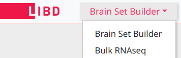

LIBD Brain Data Portal
This is a multi-page web application where the page (screen) can be selected using the top-left navigation button :

This is a button which when clicked displays a drop-down menu with the available application pages.
The pages not implemented yet are grayed out.
The entry page is the Brain Set Builder, however if the user
is just interested in available datasets for specific data types (e.g. Bulk RNAseq data),
the user can navigate directly to the data type of interest by using this top-left navigation button.
Brain Set Builder
The Brain Set Builder
page allows the user to get an overview of the available data types for the subjects loaded in the database,
and make an informed selection of a set of subjects of interest based on diagnosis and demographics as well as availability
of experiment data for the subjects.
In order to create a set of subjects a selection must be made by clicking to highlight one or more features in the available panels
and then clicking the Apply button that appears at the top of a category panel
whenever the highlighted criteria have changed for that panel.
Only after clicking the Apply button the selection will be actually applied and
all the subject counts in the other category panels will be updated to reflect the applied selection.
Region / Data type selection

|
The table in the center of the page shows how many subjects were sequenced by various data types across brain regions, as loaded in the database.
A subject can have samples sequenced from multiple brain regions and different data types, so they are counted independently per brain region
and data type in this table.
Selecting the first region cell locks the selection to that experiment data type (column). The selection of region cells in this matrix
will restrict the subjects to only those that have sequencing data for the selected brain regions, for the selected data type (column).
|
Brain Set Browser
The Browse tab of the Brain Set Builder allows the inspection of the subject data for all the selected subjects,
and exporting the resulting table as a CSV/TSV file.
It also allows further customization of the subject data table based on sequencing information for each brain.
The default table shows the demographics data along with the total number of sequencing samples for each experiment data type, as loaded in the database.
The checkbox labeled Show sample counts by brain region above the table allows switching to a detailed view of sample counts by brain region, so the table will expand accordingly
to show all the sequenced brain regions and the sample count per experiment data type within each region.
The subject set table can be customized to include/exclude the columns specific to experiment data types (the first set of checkboxes, which are all checked by default),
but also to further restrict the subject set to only those brains that have specific experiment data type available (the second set of checkboxes on the right).
Note that for the set of checkboxes on the right, a subject shall only be included in the dataset when it has experiment data available for all the data types checked.